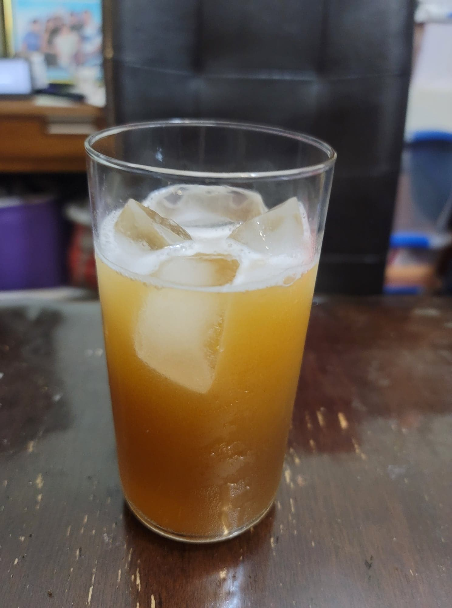

Lemon Balm Soda

Ingredients:
- 4 cups Water
- 1 cup Lemon balm, pounded
- 1/2 cup Sugar
- 1/4 cup Ginger bug
Instructions:
- Place the water into a pot and bring to a boil. Then remove from heat and add the lemon balm. Cover and let steep for 10 minutes.
- Stir in the sugar until completely dissolved. Re-cover and let cool completely to room temperature.
- Stir in the ginger bug and transfer to 2 16 oz flip-top bottles. Let ferment in a cool, dark location for 3-7 days, or until carbonated to preference. Then refrigerate and serve cold over ice.